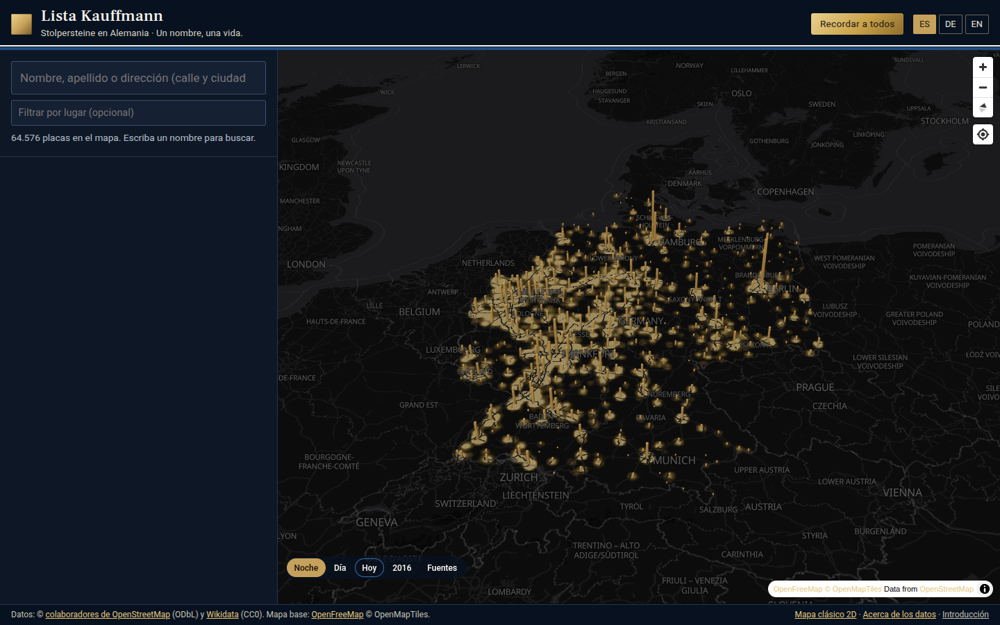
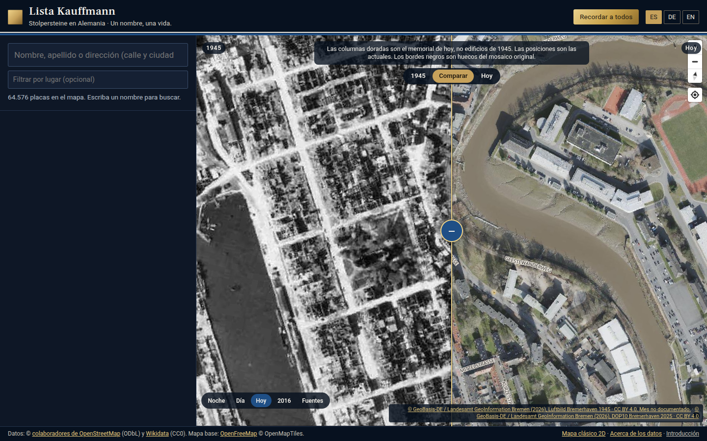
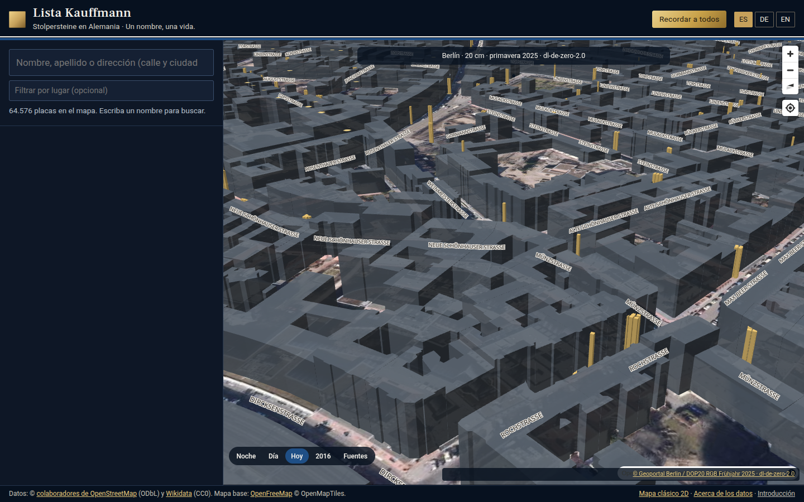

Kauffmann-Liste · Kauffmann List · Lista Kauffmann
Jede Platte, jeder Name, jede Geschichte.
Nie vergessen.
Arbeitsfassung vom 7. November 2026 für Gespräche mit Institutionen. Nicht veröffentlicht. Keine Trägerschaft als gemeinnützige Organisation. Keine Partnerschaft ist geschlossen.
Worum es geht
Die Kauffmann-Liste ist eine freie, nicht kommerzielle Karte der Stolpersteine in Deutschland. Eine Familie soll von überall einen Vornamen, einen Nachnamen oder eine Adresse suchen und die Platte vor dem Haus sehen können, samt dem, was wir belegt haben. Nicht mehr.
Wer
Begründet von Carlos Kauffmann. Eine weitere Biografie veröffentlichen wir hier nicht: dafür fehlt eine Quelle, und wir erfinden keine.
Was heute steht
Zahlen vom 7. November 2026. Quelle der Steine: OpenStreetMap, ODbL, Auszug 4. November 2026, und Wikidata, CC0. Die Karte ist unvollständig. Die Stiftung Spuren – Gunter Demnig zählt mehr als 116.000 Stolpersteine in 31 Ländern; in offenen Daten zu Deutschland fehlen schätzungsweise 40.000.
Der Biografietext stammt nur aus den deutschen Wikipedia-Listen „Liste der Stolpersteine in …“, CC BY-SA 4.0, und nur wenn Name, Ort und Adresse oder Dateiname des Fotos übereinstimmen und genau eine Zeile passt. Unsichere Treffer werden nicht gezeigt. In denselben Listen wurden rund 9.900 Texte mit mindestens 300 Zeichen gemessen; die strengere Zuordnung ergibt die 4.038 auf der Karte. Texte von Initiativen werden nicht kopiert.
Als Link, nicht als Text: 10.730 Seiten von Stolpersteine Berlin, 7.518 von Stolpersteine Hamburg, 823 von Stolpersteine Bremen, dazu 5.880 Gedenkbuch-IDs, 378 Yad-Vashem-IDs und 1.595 USHMM-IDs aus Wikidata. Arolsen bleibt eine Suche, kein übernommener Bestand.
1945 gibt es auf der Karte nur für Bremerhaven: Luftbild 1945, Monat nicht belegt, CC BY 4.0, neben dem DOP10 von 2025. Berlin 1953, Nordrhein-Westfalen ab 1951 und Dresden 1953 werden nicht als 1945 bezeichnet.
„Heute“ sind amtliche Orthofotos der Länder, bei denen am 7. November 2026 ein GetMap-Bild und CORS bestätigt wurden. DOP10 in Bremen, Bremerhaven und Nordrhein-Westfalen; sonst überwiegend DOP20. Rheinland-Pfalz antwortet ohne CORS und wird nicht gezeichnet. Schleswig-Holstein und Sachsen-Anhalt nur über https. Weit herausgezoomt liegt Sentinel-2 von 2016 darunter, etwa 10 m, als Übersicht beschriftet, nicht als heutiges Orthofoto.
So sieht die Karte aus



Grundsätze
- Frei und nicht kommerziell. Kein Eintritt, kein Verkauf der Daten.
- Keine erfundene und keine umgeschriebene Biografie. Kein Text aus einem Sprachmodell.
- Jede Angabe mit Quelle. Was keine Quelle hat, erscheint nicht.
- Die Inschrift steht so, wie sie gegossen ist, einschließlich der Schreibung.
- Familien können korrigieren und um Entfernung bitten. Das Formular ist noch nicht geöffnet.
- Lizenzen und Namensnennung bleiben sichtbar: ODbL, CC0, CC BY-SA, CC BY, Datenlizenz Deutschland, und die Bedingungen jedes Landesamts.
- Geschützte Archive werden verlinkt, nicht kopiert. Anonymisierte Steine bleiben anonym.
Was wir bitten
- Erlaubnis, einen belegten Auszug einer Biografie zu zeigen, mit Autorennamen und Link auf die Originalseite. Oder nur die Erlaubnis zu verlinken.
- Georeferenzierte Luftbilder von 1945 mit geklärter Lizenz. Spätere Jahrgänge übernehmen wir nicht unter der Jahreszahl 1945.
- 3D-Modelle und Fotos nur mit offener Lizenz, Fotos vorzugsweise über Wikimedia Commons.
- Menschen, die eine zweite Prüfung machen: Quelle gegen Angabe. Nicht, um Geschichten zu schreiben.
- Eine Ansprechperson für Korrekturen.
So würde die Namensnennung aussehen
Wenn eine Initiative einen Auszug freigibt, steht er in der Karteikarte unter „Die Geschichte“, unverändert im Sinn, mit diesem sichtbaren Nachweis. Ohne diesen Kasten kein Text.
Text
„…der freigegebene Satz, wortgetreu…“
Quelle: Name der Institution, Titel der Seite, URL, Datum der Freigabe. Angezeigt mit Genehmigung. Lizenz: wie vereinbart.
Kontakt
Eine Adresse, eingetragen an genau einer Stelle im Skript.
Kurzfassung
Eine Seite, zum Weitergeben. Dieselben Grenzen wie diese Seite: in Vorbereitung, keine Partnerschaft, keine erfundenen Zahlen.